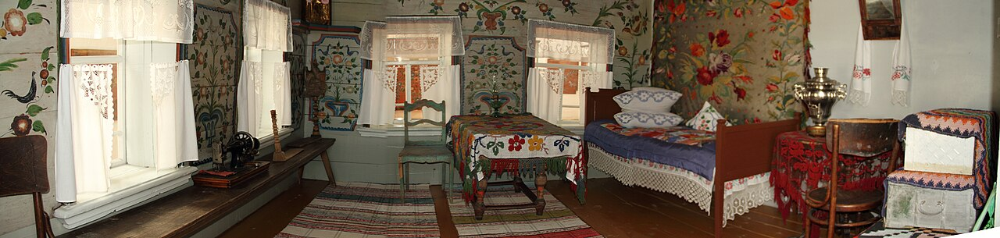

{kind=link}
Двуцветный мазок объясняет приём, но учебный след не копирует конкретный музейный фрагмент.

Крестьянская изба в экспозиции Нижнесинячихинского музея · фото Di Bor, 2012 · Wikimedia Commons, CC BY-SA 3.0. Кадр показывает пространство, но не доказывает авторство Варлама Рябкова.
Средний Урал · расписной дом · маршрут взгляда
Где кончается стена?
Узор входит в угол — и стена перестаёт быть плоскостью. За три минуты ты проведёшь один мазок от кисти к потолку и сам соберёшь из него горницу.
01 Две краски дают объём. 02 Крупный мотив держит взгляд. 03 Ветвь связывает комнату.
Документальный пролог · 42 секунды
Комната не помещается в раму
Не ищи самый красивый цветок. Следи, куда роспись уводит взгляд: к углу, вверх, дальше по комнате.
Документальные кадры: Di Bor, CC BY-SA 3.0; Toshishiro, CC BY-SA 4.0. Исторический интерьер не реконструируется.
Увидеть без видео: четыре кадра
- Горница видна целиком: роспись окружает вещи и окна.
- Взгляд проходит от большой плоскости стены к углу.
- За углом начинается следующая поверхность, а наверху — потолок.
- Панорама показывает музейную экспозицию, но не называет автора её росписи.
Аудиопрогулка · 36 секунд
Встань у порога
Короткая прогулка взглядом: от стены — через угол — к потолку и обратно к человеческому масштабу.
Читает синтезированный голос. Аудио не запускается автоматически.
Полная расшифровка
Встань мысленно у порога. Не выбирай самый красивый цветок. Сначала найди большую плоскость стены, потом проведи взгляд к углу. Поворот не заканчивает комнату: за ним начинается соседняя поверхность. Подними взгляд к потолку, затем верни его к лавке и вещам человеческого масштаба. Так отдельные мотивы могут читаться как один пространственный путь. Это наблюдение над устройством интерьера, а не атрибуция этой панорамы конкретному мастеру.
Главный интерактив · около минуты
Один мазок собирает горницу
Набери два цвета на одну кисть. От первого следа вырасти мотив, проведи ветвь через угол — и сложи плоскость в комнату.
Что откроетсяРоспись работает не как собрание картинок, а как маршрут между поверхностями.
Шаг 1 из 5 · набери кисть
Пустая учебная развертка. Это не обмер и не реконструкция горницы Рябкова.
Первый шаг: набери два края кисти разными красками.
Сравнить пространство
Проверить доказательство
Ярким показан пространственный принцип. Это учебная модель, не историческая реконструкция.
Текстовая альтернатива: пять состояний
| Действие | Что меняется | Статус |
|---|---|---|
| Две краски | Один жест даёт двухцветный след | учебная модель техники |
| Крупный мотив | У комнаты появляется зрительная опора | учебная композиция |
| Переход через сгиб | Ветвь связывает две стены и верх | учебное объяснение пространства |
| Сложенная горница | Плоский путь становится маршрутом взгляда | не реконструкция |
| Документальный слой | Отделяет музейный кадр и атрибуцию фрагментов от модели | проверенная граница |
Четыре связанных масштаба
От следа кисти — к горнице, дому и музейному ансамблю
Стена, угол, потолок, окна и лавки читаются вместе — роспись вступает с ними в связь.
Комната была частью жилого здания: границы поверхностей задавали росписи архитектурную задачу.
Нижняя Синячиха собрала памятники из разных мест. Место хранения нельзя автоматически превращать в название одной местной школы.
Что заметить
Смотри на переход, а не только на цветок
Крупный мотив останавливает взгляд. Ветвь выводит его к углу. Сгиб превращает плоскость в комнату. Именно этот переход невозможно почувствовать по отдельной фотографии орнамента.
Трудно поверить
Мы знаем имя — но не имеем права подписать им всю горницу
Официальная карточка «Артефакта» атрибутирует Варламу Кононовичу Рябкову два фрагмента белой горницы из деревни Камельской. Панорама этой страницы — другой документ: она фиксирует музейную экспозицию 2012 года. Похожесть не соединяет эти свидетельства автоматически.
Человеческая история
Сохранить дом — значит сохранить связи
Иван Данилович Самойлов создавал Нижнесинячихинский музей-заповедник как место, где спасённые постройки и народное искусство снова можно увидеть рядом. Но перенос спасает вещь и одновременно делает её историю хрупкой: откуда она, в какой комнате находилась, с чем соседствовала?
У отдельного цветка есть форма. У фрагмента с точным происхождением — ещё и биография. Без неё расписной дом легко превращается в альбом красивых деталей.
Открытое расследование
Какое доказательство стоит найти следующим?
Каталожная карточка, обмер, фотография до переноса или точная музейная атрибуция могут вернуть фрагменту его место. Если знаешь такой документ — подскажи редакции.
Предложить источникM-31 · разбор
Документ, модель, неизвестное
Что подтверждено
Музей хранит корпус деревянного зодчества и народного искусства; открытая панорама фиксирует одну экспозицию в 2012 году; карточка «Артефакта» связывает с Рябковым два конкретных фрагмента из Камельской.
Что показывает учебная модель
Как узор может перейти между плоскостями и направить взгляд по комнате. Она не воспроизводит конкретный утраченный интерьер.
Что остаётся неизвестным
Нельзя по этой панораме установить автора росписи или перенести атрибуцию фрагментов на всю показанную горницу.
Россия и мир
Расписной дом встречается в разных культурах — принцип надо сравнивать, а не угадывать родство
В шведских усадьбах Хельсингланда роспись тоже охватывает интерьер, но сходство масштаба не доказывает заимствование. Сравнение требует отдельных источников о технике, заказчике, планировке и пути мастеров.
Официальная карточка UNESCO: Decorated Farmhouses of HälsinglandКарта расписного и резного дома
А ещё были расписные и резные дома
Это не одна школа и не ряд одинаковых изб. Краска строила цветовой маршрут, резьба работала объёмом и тенью; лепнина и авторские ансамбли стоят отдельно.
Роспись: где краска меняла дом
Нижняя Синячиха · открыта. Урало-сибирский музейный корпус: начни с пространства и границы атрибуции.
Резьба: где работала тень
Городец и Нижегородское Заволжье · будущая неделя. Глухая резьба читается рельефом, а не цветом.
Не школа, а отдельный голос
Кунара · резерв. Дом кузнеца Кириллова — индивидуальный смешанный ансамбль росписи, металла и фигур.
Другой материал
Вятское · исследуется. Лепной фасад нельзя выдавать за деревянную резьбу.
Открыть полную карту документированных направлений
Роспись
- Урало-сибирская: Синячиха · открыта
- Западная Сибирь и Алтай · будущая неделя
- Поважье · будущая неделя
- Поонежье и Кенозерье · исследуется
- Северная Двина · резерв
- Удора · будущая неделя
- Нижегородское Заволжье · резерв
- Вятский музейный корпус · исследуется
- Семейские Забайкалья · исследуется
- Дом со львом, Поповка · резерв
Резьба
- Городецкая и нижегородская глухая · будущая неделя
- Тюменская объёмная · будущая неделя
- Русский Север: конструктивная резьба · резерв
- Тверская и владимирская пропильная · исследуется
- Томск: городская резьба и деревянный модерн · будущая неделя
Отдельно
- Вятское: лепнина · исследуется
- Кунара: дом Кириллова · резерв
Игра о сохранении
Не потеряй историю фрагмента
Перед переносом расписной части дома что сохраняет её происхождение?
Выбери решение.
Проверка открытия
Что именно доказывает панорама?
Выбери точное утверждение.
Календарь музея
Один день — один способ увидеть дом
Сегодня — роспись как маршрут по горнице. Следующие открытия будут посвящены свету, материалу, конструкции и жизни здания в ландшафте.
Куда дальше
Возьми этот взгляд в реальный дом
Сначала найди крупную плоскость, затем угол и верх. Только после этого рассматривай отдельный цветок: так украшение снова становится частью архитектуры.
Источники и права
- «Артефакт»: Варлам Кононович Рябков — атрибуция двух фрагментов.
- Культура.РФ: Нижнесинячихинский музей-заповедник.
- Культура.РФ: нижегородская глухая резьба.
- Культура.РФ: роспись коми-старообрядцев Удоры.
- Томская областная библиотека: домовая резьба.
- Фото Di Bor, CC BY-SA 3.0; уменьшенная веб-копия.